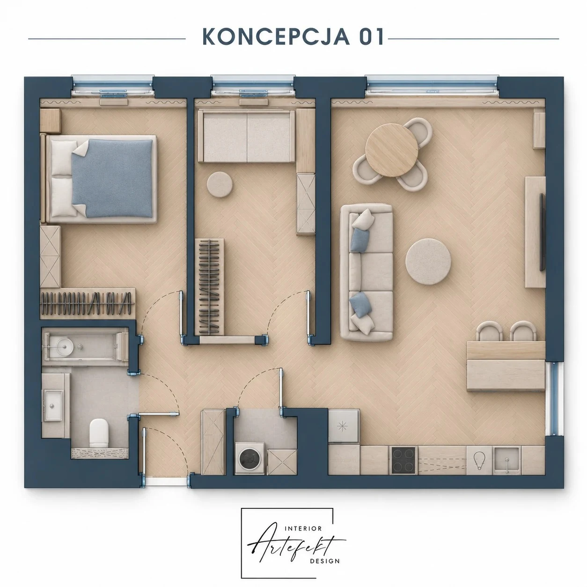
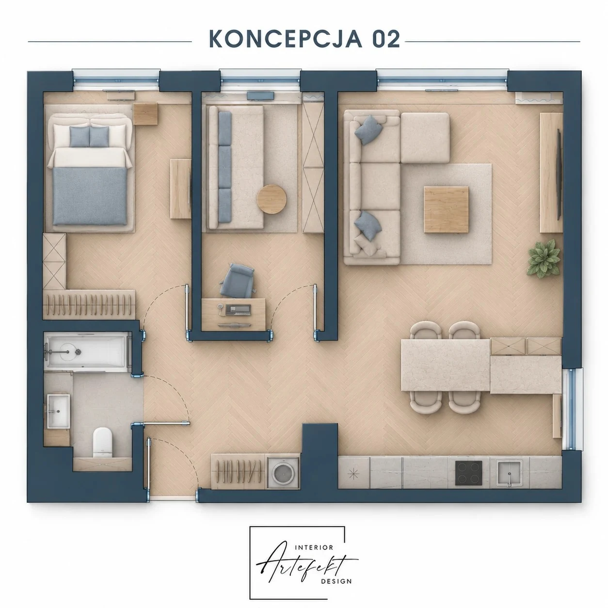
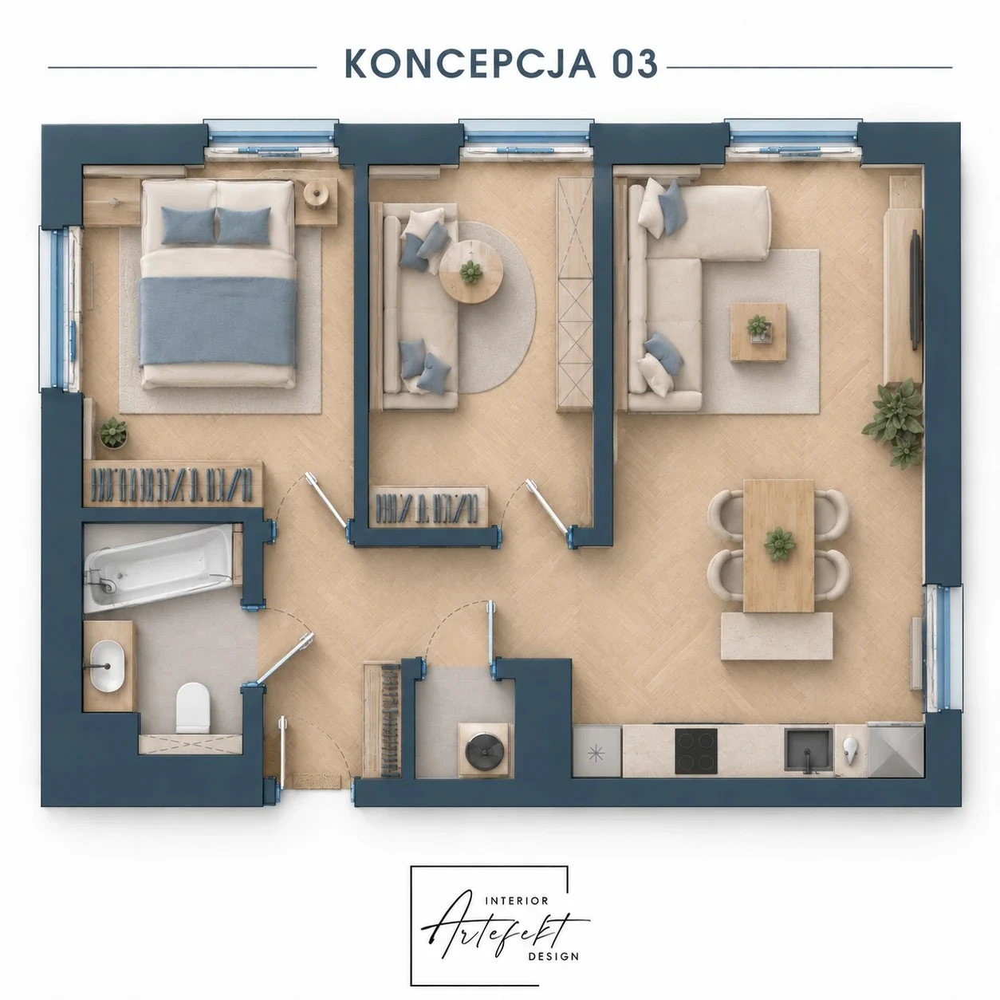

Metraż to punkt wyjścia, ale nie wszystko
W pierwszej kolejności liczy się metraż. Ale dwa mieszkania o tej samej powierzchni mogą wymagać zupełnie innej pracy. Bierzemy pod uwagę też to, czy mieszkanie jest w starej kamienicy, w nowym budownictwie od dewelopera, czy do remontu, oraz jaki jest zakres naszego projektu. Nie zawsze trzeba robić wersję „full wypas”.
Które pomieszczenia są najbardziej pracochłonne
Zdecydowanie kuchnia i łazienka. Tam trzeba przemyśleć bardzo wiele elementów i nie ma miejsca na błędy. Kuchnia musi być po prostu wygodna. Łazienka, zwłaszcza mała, musi być pakowna i ustawna, a przy tym pomieścić wiele funkcji. Salon czy sypialnia przy tej samej powierzchni zwykle dają mniej pracy.
Zakresy współpracy: projekt koncepcyjny i kompleksowy
Projekt koncepcyjny. To przede wszystkim minimum trzy warianty układu. Zwykle robimy między trzema a sześcią, ale nie po to, żeby narobić klientowi mętliku w głowie. Chodzi o to, żeby pokazać możliwości i potencjał mieszkania. Zawsze robimy go po rozmowie z klientem, dopasowany do tego, jak żyje i czego oczekuje. Czasem dodajemy jeszcze jeden wariant: taki, który naszym zdaniem będzie najwygodniejszy, razem z wyjaśnieniem, dlaczego. Najzabawniejsze jest to, że klienci, nawet Ci bardzo zafiksowani na swojej wersji, często po przemyśleniu wybierają coś trochę innego. Taki projekt „pokazuje” mieszkanie, a klienci często na tym kończą i dalej radzą sobie sami.



Projekt kompleksowy. To projekt ze wszystkim: z wizualizacjami i wszelkimi rysunkami. Jest w nim dużo więcej pracy, a klient dostaje pełny projekt, który może przekazać ekipie wykonawczej i na jego podstawie wykonywać prace.
Czy stan wyjściowy ma znaczenie
Bardzo. W mieszkaniu w stanie deweloperskim pracujemy na czystej kartce. W starym mieszkaniu po skuciu elementów, które zmieniamy, często wychodzą niespodzianki: piony kanalizacyjne w ścianie, których wcześniej nie było widać, albo zabudowane przez kogoś wcześniej rury gazowe. Czasem też po skuciu łazienki okazuje się, że mamy nawet 10 cm więcej miejsca. To może mocno zmienić naszą pracę.
Ile wizualizacji i poprawek jest w cenie
Wizualizacja u nas działa w trzech etapach. Najpierw, po wywiadzie z inwestorem, robimy pierwszą wizualizację. To dla nas największe wyzwanie, bo w oparciu o Wasz gust musimy pokazać, jak nasze oczy widzą Wasze wymarzone wnętrze. Potem są dwie tury poprawek i obie są w cenie. Zwykle na nich się kończy. Jeśli potrzeba dorobić coś więcej, wyceniamy to indywidualnie, na podstawie jednego ujęcia.
Jak wyceniamy nadzór
Zależy od Waszych potrzeb i od tego, czy chcecie sami sobie ze wszystkim radzić. Często nasi klienci mieszkają w innym mieście, a nawet w innym kraju. Wtedy chcą mieć dopilnowane wszystko: od znalezienia ekipy, przez zamówienie materiałów i koordynację dostaw, po całe wykończenie i pilnowanie, czy projekt idzie zgodnie z oczekiwaniami. Są też klienci, którym wystarczy jedna wizyta w tygodniu na budowie, żeby sprawdzić postęp. Jedno i drugie da się zrobić, dlatego zakres i cenę nadzoru wyceniamy indywidualnie.
Najczęstsze nieporozumienie: porównywanie ofert
Klienci często porównują różne pracownie, ale nie zawsze wiedzą, co jest w cenie w którym projekcie. Jedna pracownia wycenia coś zupełnie innego niż druga i dlatego ceny mogą się bardzo różnić. Ważne jest więc nie tylko ile, ale co dostajesz i co jest wyceniane.
Jak nie przepłacić i dostać dobry projekt
Najważniejsze jest jasne określenie zakresu. Wiedz, czego potrzebujesz (sam układ, projekt z wizualizacjami, nadzór) i poproś o wycenę dokładnie tego.
Konsultacja czy projekt
Konsultacja jest dobra, kiedy liczy się czas i potrzebna jest szybka decyzja. Na przykład ekipa jest już na budowie i za chwilę ma malować, a Ty potrzebujesz usłyszeć, o ile przesunąć gniazdko i jaki wybrać kolor. To szybsza i niskobudżetowa usługa, w której korzystasz z naszej dwudziestoletniej wiedzy. Konsultacja trwa dwie godziny i kosztuje 1000 zł. Taką samą wiedzą dzielimy się z klientami, którzy zamawiają u nas projekt kompleksowy.
Masz pytania o zakres i wycenę? Napisz do nas, odpowiemy w ciągu 2 dni roboczych. Pierwsze spotkanie jest bezpłatne. Umów spotkanie.